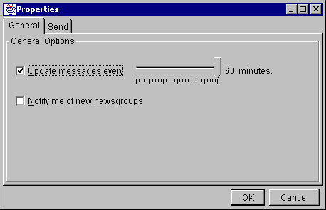
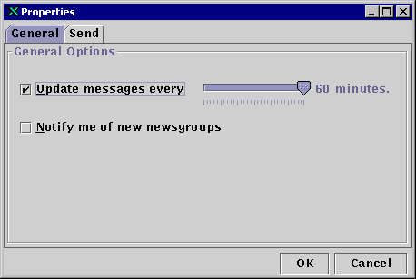

This is the second NewsAgent development screenshot (the first one is elsewhere). I've upgraded NewsAgent to use Swing 1.0, so it now has the groovy Metal look and feel under platforms other than Windows.
This is the first tab of the options dialogue in the Windows look and feel.

The second screenshot is exactly the same dialog, but running from a DEC Alpha machine on Digital UNIX, under X Windows and using the Metal look and feel.

Using the layout managers was extremely tricky, and JBuilder doesn't like JFrames and JPanels much. However, it all came together in the end.